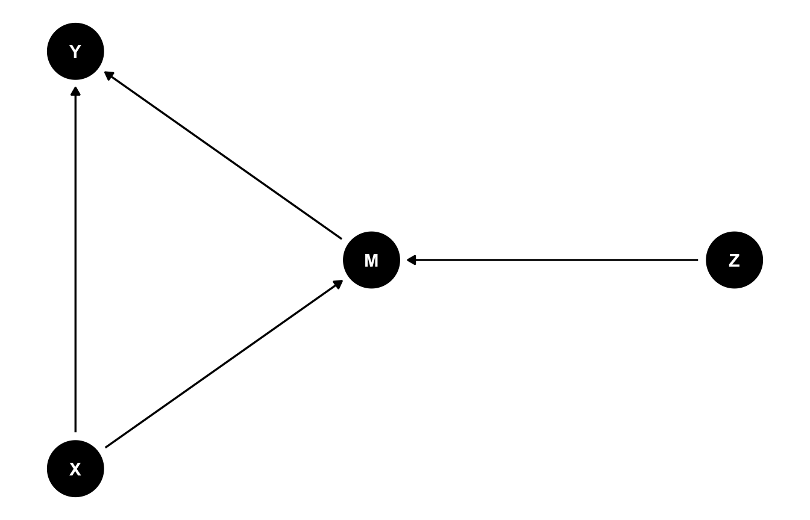
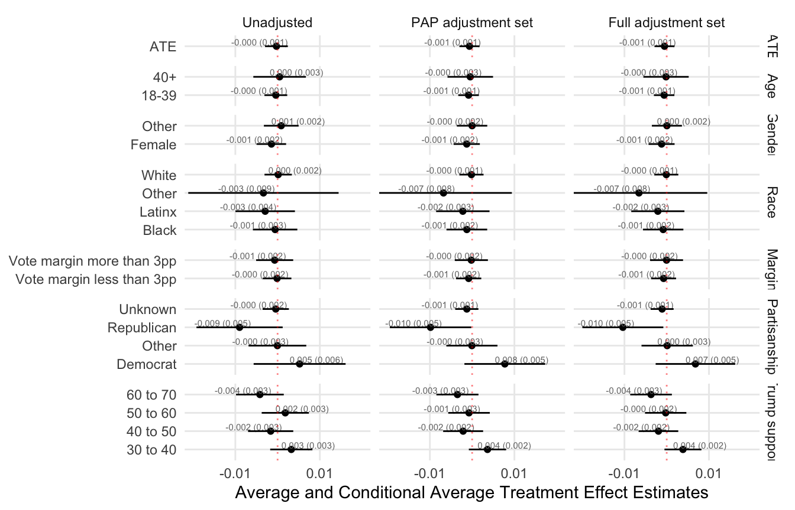
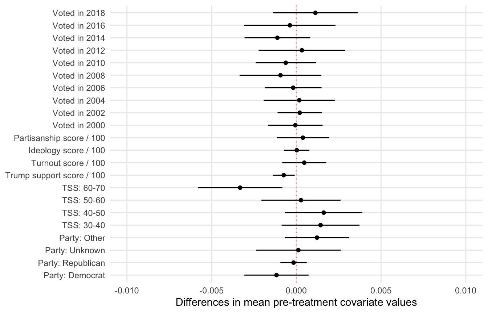

pkgs <- c(
"tidyverse", "dagitty", "ggdag",
"estimatr", "AER", "broom", "modelsummary",
"patchwork", "here", "xtable"
)
to_install <- pkgs[!sapply(pkgs, requireNamespace, quietly = TRUE)]
if(length(to_install) > 0) install.packages(to_install)
library(tidyverse)
library(dagitty)
library(ggdag)
library(estimatr)
library(AER)
library(broom)
library(modelsummary)
library(patchwork)
library(here)
library(xtable)Lab 3 — Practical Applications: Experiments, Balance, Noncompliance, Instruments, Attrition (with DAGs)
1) Purpose of this lab
This lab is a practical companion to the lecture. We focus on:
- Experiments (randomization and interpretation as causal)
- Balance (diagnostics for randomization)
- Noncompliance (assignment vs treatment received)
- Instrumental variables (IV / Wald / 2SLS as LATE under assumptions)
- Attrition (missing outcomes and what it breaks)
- Covariate adjustment for precision
We will: 1) sketch DAGs for two motivating examples (Identity; Masking), 2) practice with generated data, 3) end with a template to keep only replication-package parts relevant to these topics for Aggarwal et al. (2023).
2) Packages
3) Motivating example
Community masking during COVID (Abaluck et al. 2022): DAG sketch
Simplified causal story (cluster RCT)
Z: village-level assignment to mask campaignM: mask wearing (uptake/compliance)Y: COVID outcomes (symptoms/seroprevalence)X: pre-treatment covariates
dag_masking <- dagitty("
dag {
X -> Y
X -> M
Z -> M
M -> Y
}
")
ggdag(dag_masking) + theme_dag()
4) Generated data playground (one dataset for all concepts)
We create: - baseline covariates X, - randomized assignment Z, - treatment received D with noncompliance, - outcome Y, - missing outcome indicator R to represent attrition.
set.seed(123)
n <- 3000
df <- tibble(
id = 1:n,
# Pre-treatment covariates (X)
age = round(rnorm(n, mean = 40, sd = 12)),
female = rbinom(n, 1, 0.55),
baseline_interest = rnorm(n, 0, 1),
# Random assignment (Z)
Z = rbinom(n, 1, 0.5)
)
# Noncompliance: D depends on Z and baseline_interest (so D is NOT randomized)
logit_pD <- -1.2 + 1.5 * df$Z + 0.7 * df$baseline_interest
pD <- plogis(logit_pD)
df <- df %>% mutate(D = rbinom(n, 1, pD))
# Outcome depends on D and pre-treatment covariates
df <- df %>% mutate(
Y = 0.2 * D +
0.05 * (age - 40) / 12 +
0.1 * female +
0.25 * baseline_interest +
rnorm(n, 0, 1)
)
# Attrition: missingness depends on covariates (NOT MCAR)
logit_miss <- -2.2 + 0.6 * df$baseline_interest + 0.3 * (df$age > 55)
p_miss <- plogis(logit_miss)
df <- df %>%
mutate(R = rbinom(n, 1, p_miss)) %>% # R=1 means missing outcome
mutate(Y_obs = ifelse(R == 1, NA, Y))
glimpse(df)Rows: 3,000
Columns: 9
$ id <int> 1, 2, 3, 4, 5, 6, 7, 8, 9, 10, 11, 12, 13, 14, 15, 16, 17, 18, 19, 20, 21, 22, 23, 24, 25, 2…
$ age <dbl> 33, 37, 59, 41, 42, 61, 46, 25, 32, 35, 55, 44, 45, 41, 33, 61, 46, 16, 48, 34, 27, 37, 28, …
$ female <int> 1, 1, 1, 1, 1, 0, 1, 0, 0, 1, 1, 0, 0, 0, 1, 0, 0, 1, 1, 0, 0, 1, 1, 1, 1, 0, 0, 0, 1, 1, 0,…
$ baseline_interest <dbl> 0.83437149, -0.69840395, 1.30924048, -0.98017763, 0.74798510, 1.25779662, 1.22218335, -0.112…
$ Z <int> 1, 0, 1, 1, 0, 1, 0, 1, 0, 1, 0, 0, 0, 1, 0, 0, 1, 1, 0, 0, 0, 0, 0, 0, 1, 0, 0, 0, 0, 1, 1,…
$ D <int> 0, 0, 1, 0, 0, 1, 0, 0, 1, 0, 0, 0, 1, 1, 0, 0, 0, 0, 0, 0, 0, 0, 0, 0, 0, 1, 1, 1, 0, 1, 1,…
$ Y <dbl> 1.26574286, -0.75006834, 1.28319788, -0.27871551, 0.12715287, 1.17814214, 2.91411308, -0.122…
$ R <int> 0, 0, 0, 0, 0, 1, 0, 0, 0, 0, 0, 0, 0, 0, 0, 1, 0, 0, 0, 0, 0, 0, 0, 0, 0, 1, 0, 0, 0, 0, 0,…
$ Y_obs <dbl> 1.26574286, -0.75006834, 1.28319788, -0.27871551, 0.12715287, NA, 2.91411308, -0.12271343, -…5) Experiment: ITT (effect of assignment)
Because Z is randomized, comparing Y by Z identifies an intent-to-treat effect (ITT).
itt <- lm_robust(Y_obs ~ Z, data = df, se_type = "stata")
tidy(itt) term estimate std.error statistic p.value conf.low conf.high df outcome
1 (Intercept) 0.120093486 0.02887751 4.1587206 3.301785e-05 0.06346882 0.17671816 2657 Y_obs
2 Z 0.008871506 0.04086278 0.2171048 8.281433e-01 -0.07125457 0.08899758 2657 Y_obsInterpretation: coefficient on Z is (E[Y|Z=1] - E[Y|Z=0]) using observed outcomes.
6) Balance: did randomization create comparable groups?
Balance checks compare pre-treatment covariates across Z.
6.1 Simple balance table
balance_tbl <- df %>%
group_by(Z) %>%
summarize(
n = n(),
mean_age = mean(age),
mean_female = mean(female),
mean_interest = mean(baseline_interest),
.groups = "drop"
)
balance_tbl# A tibble: 2 × 5
Z n mean_age mean_female mean_interest
<int> <int> <dbl> <dbl> <dbl>
1 0 1496 40.3 0.568 0.00319
2 1 1504 40.0 0.551 0.009766.2 Regression-based balance checks
m_age <- lm_robust(age ~ Z, data = df)
m_female <- lm_robust(female ~ Z, data = df)
m_interest <- lm_robust(baseline_interest ~ Z, data = df)
modelsummary(
list("Age" = m_age, "Female" = m_female, "Baseline interest" = m_interest),
statistic = c("({std.error})", "p = {p.value}"),
gof_omit = "IC|Log|Adj|Within"
)| Age | Female | Baseline interest | |
|---|---|---|---|
| (Intercept) | 40.342 | 0.568 | 0.003 |
| (0.309) | (0.013) | (0.025) | |
| p = <0.001 | p = <0.001 | p = 0.898 | |
| Z | -0.358 | -0.016 | 0.007 |
| (0.435) | (0.018) | (0.036) | |
| p = 0.411 | p = 0.368 | p = 0.856 | |
| Num.Obs. | 3000 | 3000 | 3000 |
| R2 | 0.000 | 0.000 | 0.000 |
| RMSE | 11.92 | 0.50 | 0.99 |
7) Noncompliance: assignment vs treatment received
Here, D is not randomized (it depends on covariates), even though Z is randomized.
7.1 Naive comparison by D (potentially biased)
naive_D <- lm_robust(Y_obs ~ D, data = df, se_type = "stata")
tidy(naive_D) term estimate std.error statistic p.value conf.low conf.high df outcome
1 (Intercept) 0.0009836404 0.02615253 0.03761167 9.700001e-01 -0.05029774 0.05226502 2657 Y_obs
2 D 0.3153985165 0.04120164 7.65499951 2.686894e-14 0.23460799 0.39618905 2657 Y_obsThis can be biased because baseline_interest affects both D and Y.
7.2 First stage: does Z move D?
fs <- lm_robust(D ~ Z, data = df, se_type = "stata")
tidy(fs) term estimate std.error statistic p.value conf.low conf.high df outcome
1 (Intercept) 0.2259358 0.01081583 20.88936 1.403598e-90 0.2047286 0.2471430 2998 D
2 Z 0.3491971 0.01672007 20.88491 1.522456e-90 0.3164132 0.3819811 2998 DThe coefficient on Z is (E[D|Z=1] - E[D|Z=0]): “encouragement strength.”
8) Instrument: IV / Wald / 2SLS
If: 1) Z affects Y only through D (exclusion restriction), 2) no defiers (monotonicity), 3) Z is randomized (independent of potential outcomes),
then IV identifies a LATE for compliers.
8.1 Wald estimator (ratio)
ITT_Y <- coef(itt)["Z"]
ITT_D <- coef(fs)["Z"]
wald <- ITT_Y / ITT_D
wald Z
0.02540544 8.2 Two-stage least squares (2SLS)
iv_fit <- ivreg(Y_obs ~ D | Z, data = df)
summary(iv_fit)
Call:
ivreg(formula = Y_obs ~ D | Z, data = df)
Residuals:
Min 1Q Median 3Q Max
-3.64995 -0.69010 -0.01132 0.71908 3.22854
Coefficients:
Estimate Std. Error t value Pr(>|t|)
(Intercept) 0.11475 0.04962 2.312 0.0208 *
D 0.02510 0.11544 0.217 0.8279
---
Signif. codes: 0 '***' 0.001 '**' 0.01 '*' 0.05 '.' 0.1 ' ' 1
Residual standard error: 1.052 on 2657 degrees of freedom
Multiple R-Squared: 0.003266, Adjusted R-squared: 0.002891
Wald test: 0.04727 on 1 and 2657 DF, p-value: 0.8279 9) Attrition: missing outcomes
We created missingness R that depends on covariates. Attrition can threaten causal interpretation if missingness differs by assignment or is related to outcomes.
10) Covariate adjustment for precision
Even with randomization, controlling for strong predictors of Y can improve precision.
itt_adj <- lm_robust(Y_obs ~ Z + age + female + baseline_interest, data = df, se_type = "stata")
modelsummary(
list("ITT (unadjusted)" = itt, "ITT (adjusted)" = itt_adj),
statistic = c("({std.error})", "p = {p.value}"),
gof_omit = "IC|Log|Adj|Within"
)| ITT (unadjusted) | ITT (adjusted) | |
|---|---|---|
| (Intercept) | 0.120 | -0.070 |
| (0.029) | (0.073) | |
| p = <0.001 | p = 0.341 | |
| Z | 0.009 | 0.003 |
| (0.041) | (0.039) | |
| p = 0.828 | p = 0.945 | |
| age | 0.003 | |
| (0.002) | ||
| p = 0.045 | ||
| female | 0.138 | |
| (0.040) | ||
| p = <0.001 | ||
| baseline_interest | 0.290 | |
| (0.020) | ||
| p = <0.001 | ||
| Num.Obs. | 2659 | 2659 |
| R2 | 0.000 | 0.079 |
| RMSE | 1.05 | 1.01 |
iv_adj_r <- iv_robust(
Y_obs ~ D + age + female + baseline_interest |
Z + age + female + baseline_interest,
data = df,
se_type = "stata"
)
modelsummary(
list("IV (unadjusted)" = iv_fit, "IV (adjusted)" = iv_adj_r),
statistic = c("({std.error})", "p = {p.value}"),
gof_omit = "IC|Log|Adj|Within"
)| IV (unadjusted) | IV (adjusted) | |
|---|---|---|
| (Intercept) | 0.115 | -0.071 |
| (0.050) | (0.084) | |
| p = 0.021 | p = 0.393 | |
| D | 0.025 | 0.008 |
| (0.115) | (0.112) | |
| p = 0.828 | p = 0.945 | |
| age | 0.003 | |
| (0.002) | ||
| p = 0.045 | ||
| female | 0.138 | |
| (0.040) | ||
| p = <0.001 | ||
| baseline_interest | 0.289 | |
| (0.026) | ||
| p = <0.001 | ||
| Num.Obs. | 2659 | 2659 |
| R2 | 0.003 | 0.079 |
| RMSE | 1.05 | 1.01 |
11) Applied template: Aggarwal et al. (2023) digital advertising & turnout
Goal: keep only the replication-package components relevant to today’s topics: - estimation for randomization (ITT / conditional ITT) - balance
Paper DOI: https://doi.org/10.1038/s41562-022-01487-4
Replication package: https://isps.yale.edu/research/data/d199
Replication Archive for: Aggarwal, Minali, Jennifer Allen, Alex Coppock,
Dan Frankowski, Sol Messing, Kelly Zhang, James Barnes, Andrew Beasley,
Harry Hantman, and Sylvan Zheng: The impact of digital campaign advertising
during the 2020 US presidential election: evidence from survey experiments,
field experiments, and a campaign-level experiment.
Nature Human Behavior, forthcoming.
11.1 Figure 1: Average treatment effects and CATEs of treatment on 2020 turnout under three inverse probability-weighted regression specifications
source('./helper_file.R')
# load data and uncount
aggregated_set <- read_rds(file = "./aggregated_analysis_set.rds")
main_analysis_set <- uncount(aggregated_set, weights = n)
formula_1 <- formula("voted_in_2020 ~ condition")
formula_2 <- formula("voted_in_2020 ~ condition + num_times_voted + tss_100 + pts_100")
formula_3 <- formula("voted_in_2020 ~ condition + pts_100 + tss_100 + voted_in_2000 + voted_in_2002 + voted_in_2004 + voted_in_2006 + voted_in_2008 + voted_in_2010 + voted_in_2012 + voted_in_2014 + voted_in_2016 + voted_in_2018 + strata + party_dem + party_rep + party_unknown")
fit_ate_1 <-
lm_robust(
formula = formula_1,
weights = ipw,
data = main_analysis_set
) %>% tidy
fit_ate_2 <-
lm_robust(
formula = formula_2,
weights = ipw,
data = main_analysis_set
) %>% tidy
fit_ate_3 <-
lm_robust(
formula = formula_3,
weights = ipw,
data = main_analysis_set
) %>% tidy
tss_cates_1 <-
main_analysis_set %>%
group_by(tss_bucket) %>%
do(tidy(lm_robust(
formula = formula_1,
weights = ipw,
data = .
)))
tss_cates_2 <-
main_analysis_set %>%
group_by(tss_bucket) %>%
do(tidy(lm_robust(
formula = formula_2,
weights = ipw,
data = .
)))
tss_cates_3 <-
main_analysis_set %>%
group_by(tss_bucket) %>%
do(tidy(lm_robust(
formula = formula_3,
weights = ipw,
data = .
)))
race_cates_1 <-
main_analysis_set %>%
group_by(race) %>%
do(tidy(lm_robust(
formula = formula_1,
weights = ipw,
data = .
)))
race_cates_2 <-
main_analysis_set %>%
group_by(race) %>%
do(tidy(lm_robust(
formula = formula_2,
weights = ipw,
data = .
)))
race_cates_3 <-
main_analysis_set %>%
group_by(race) %>%
do(tidy(lm_robust(
formula = formula_3,
weights = ipw,
data = .
)))
gender_cates_1 <-
main_analysis_set %>%
group_by(gender) %>%
do(tidy(lm_robust(
formula = formula_1,
weights = ipw,
data = .
)))
gender_cates_2 <-
main_analysis_set %>%
group_by(gender) %>%
do(tidy(lm_robust(
formula = formula_2,
weights = ipw,
data = .
)))
gender_cates_3 <-
main_analysis_set %>%
group_by(gender) %>%
do(tidy(lm_robust(
formula = formula_3,
weights = ipw,
data = .
)))
age_cates_1 <-
main_analysis_set %>%
group_by(agecat) %>%
do(tidy(lm_robust(
formula = formula_1,
weights = ipw,
data = .
)))
age_cates_2 <-
main_analysis_set %>%
group_by(agecat) %>%
do(tidy(lm_robust(
formula = formula_2,
weights = ipw,
data = .
)))
age_cates_3 <-
main_analysis_set %>%
group_by(agecat) %>%
do(tidy(lm_robust(
formula = formula_3,
weights = ipw,
data = .
)))
close_margins_2016_cates_1 <-
main_analysis_set %>%
group_by(close_margins_2016) %>%
do(tidy(lm_robust(
formula = formula_1,
weights = ipw,
data = .
)))
close_margins_2016_cates_2 <-
main_analysis_set %>%
group_by(close_margins_2016) %>%
do(tidy(lm_robust(
formula = formula_2,
weights = ipw,
data = .
)))
close_margins_2016_cates_3 <-
main_analysis_set %>%
group_by(close_margins_2016) %>%
do(tidy(lm_robust(
formula = formula_3,
weights = ipw,
data = .
)))
party_cates_1 <-
main_analysis_set %>%
group_by(party) %>%
do(tidy(lm_robust(
formula = formula_1,
weights = ipw,
data = .
)))
party_cates_2 <-
main_analysis_set %>%
group_by(party) %>%
do(tidy(lm_robust(
formula = formula_2,
weights = ipw,
data = .
)))
formula_3_party <- formula("voted_in_2020 ~ condition + pts_100 + tss_100 +
voted_in_2000 + voted_in_2002 + voted_in_2004 +
voted_in_2006 + voted_in_2008 + voted_in_2010 +
voted_in_2012 + voted_in_2014 + voted_in_2016 +
voted_in_2018 + strata")
party_cates_3 <-
main_analysis_set %>%
group_by(party) %>%
do(tidy(lm_robust(
formula = formula_3_party,
weights = ipw,
data = .
)))
estimates_df_1 <-
bind_rows(
`ATE` = fit_ate_1,
`Gender` = gender_cates_1,
`Race` = race_cates_1,
`Age` = age_cates_1,
`Margin` = close_margins_2016_cates_1,
`Trump support` = tss_cates_1,
`Partisanship` = party_cates_1,
.id = "covariate"
)
estimates_df_2 <-
bind_rows(
`ATE` = fit_ate_2,
`Gender` = gender_cates_2,
`Race` = race_cates_2,
`Age` = age_cates_2,
`Margin` = close_margins_2016_cates_2,
`Trump support` = tss_cates_2,
`Partisanship` = party_cates_2,
.id = "covariate"
)
estimates_df_3 <-
bind_rows(
`ATE` = fit_ate_3,
`Gender` = gender_cates_3,
`Race` = race_cates_3,
`Age` = age_cates_3,
`Margin` = close_margins_2016_cates_3,
`Trump support` = tss_cates_3,
`Partisanship` = party_cates_3,
.id = "covariate"
)
gg_df <-
bind_rows(
`Unadjusted` = estimates_df_1,
`PAP adjustment set` = estimates_df_2,
`Full adjustment set` = estimates_df_3,
.id = "estimator",
) %>%
filter(term == "conditiontreat") %>%
mutate(
covariate_value = coalesce(gender, race, agecat, close_margins_2016, tss_bucket, party),
covariate_value = replace_na(covariate_value, "ATE"),
covariate = factor(
covariate,
levels = c(
"ATE",
"Age",
"Gender",
"Race",
"Margin",
"Partisanship",
"Trump support"
)
),
entry = make_se_entry(estimate, std.error, digits = 3),
estimator = factor(estimator, levels = c("Unadjusted", "PAP adjustment set", "Full adjustment set"))
)
g <-
ggplot(data = gg_df, aes(estimate, covariate_value)) +
geom_point() +
geom_text(
aes(label = entry, x = estimate + sign(estimate) * 0.004),
size = 2,
nudge_y = 0.25,
color = gray(0.45)
) +
geom_linerange(aes(xmin = conf.low, xmax = conf.high)) +
facet_grid(rows = vars(covariate),
cols = vars(estimator),
scales = "free_y", space = "free") +
geom_vline(xintercept = 0,
color = "red",
linetype = "dotted",
alpha = 0.5) +
coord_cartesian(xlim = c(-0.02, 0.02)) +
scale_x_continuous(breaks = c(-0.01, 0.01)) +
theme_minimal() +
theme(axis.title.y = element_blank(),
panel.grid.minor.x = element_blank()) +
xlab("Average and Conditional Average Treatment Effect Estimates")
#ggsave("output/figure_1.pdf", g, width = 6.5, height = 6)
g
11.2 Figure 5: Balance on pre-treatment covariates
source('./helper_file.R')
# load data and uncount
aggregated_set <- read_rds(file = "./aggregated_analysis_set.rds")
main_analysis_set <- uncount(aggregated_set, weights = n)
all_covs <-
c(
'party_dem',
'party_rep',
'party_unknown',
'party_other',
'tss_30_40',
'tss_40_50',
'tss_50_60',
'tss_60_70',
'tss_100',
'pts_100',
"ideology_score_100",
"partisan_score_100",
"voted_in_2000",
"voted_in_2002",
"voted_in_2004",
"voted_in_2006",
"voted_in_2008",
"voted_in_2010",
"voted_in_2012",
"voted_in_2014",
"voted_in_2016",
"voted_in_2018"
)
cov_labels <-
c(
'Party: Democrat',
'Party: Republican',
'Party: Unknown',
'Party: Other',
'TSS: 30-40',
'TSS: 40-50',
'TSS: 50-60',
'TSS: 60-70',
'Trump support score / 100',
'Turnout score / 100',
"Ideology score / 100",
"Partisanship score / 100",
"Voted in 2000",
"Voted in 2002",
"Voted in 2004",
"Voted in 2006",
"Voted in 2008",
"Voted in 2010",
"Voted in 2012",
"Voted in 2014",
"Voted in 2016",
"Voted in 2018"
)
balance_regs <-
lm_robust(formula = formula(paste0(
"cbind(", paste0(all_covs, collapse = ", "), ") ~ condition"
)),
weights = ipw,
data = main_analysis_set)
balance_df <-
tidy(balance_regs) %>%
filter(term == "conditiontreat") %>%
mutate(outcome = factor(outcome, levels = all_covs, labels = cov_labels),
adjusted_p = p.adjust(p.value, method = "BH"))
g <-
ggplot(balance_df, aes(estimate, outcome)) +
geom_point() +
geom_linerange(aes(xmin = conf.low, xmax = conf.high)) +
geom_vline(xintercept = 0, color= "red", linetype = "dotted", alpha = 0.5) +
scale_x_continuous(breaks = seq(-0.01, 0.01, 0.005)) +
coord_cartesian(xlim = c(-0.01, 0.01)) +
theme_minimal() +
theme(axis.title.y = element_blank(),
panel.grid.minor.x = element_blank()) +
labs(x = "Differences in mean pre-treatment covariate values")
#ggsave("output/figure_5.pdf", width = 6.5, height = 3.5)
g
Key links to concepts in this lab: - Z -> Y identifies ITT (experiment) - balance checks test Z ⟂ X in sample (diagnostic) - Z -> D is the first stage (noncompliance) - IV uses Z to identify effect of D on Y under assumptions - covariate adjustment can improve precision by controlling for X that predict Y. —